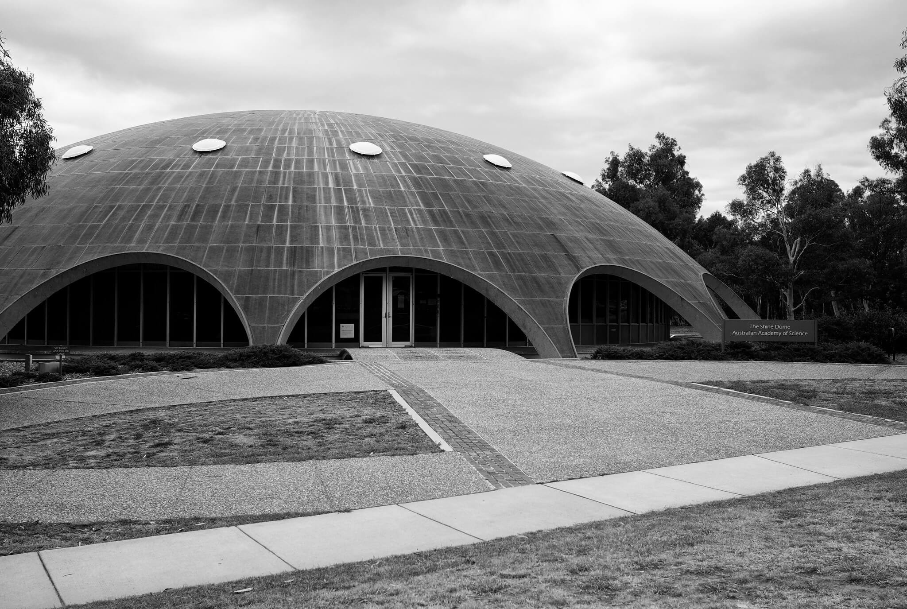
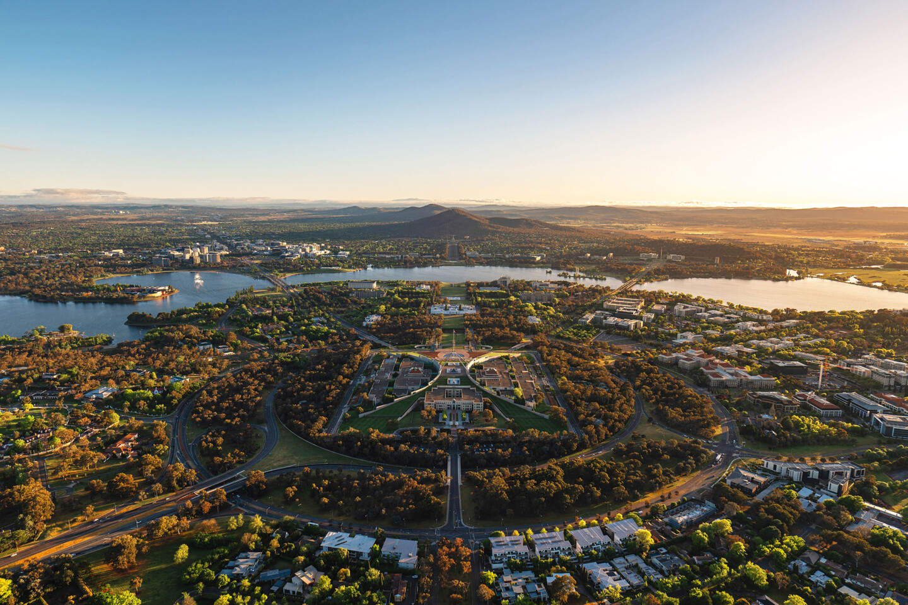
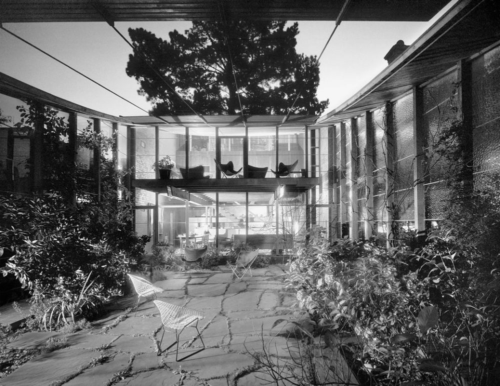
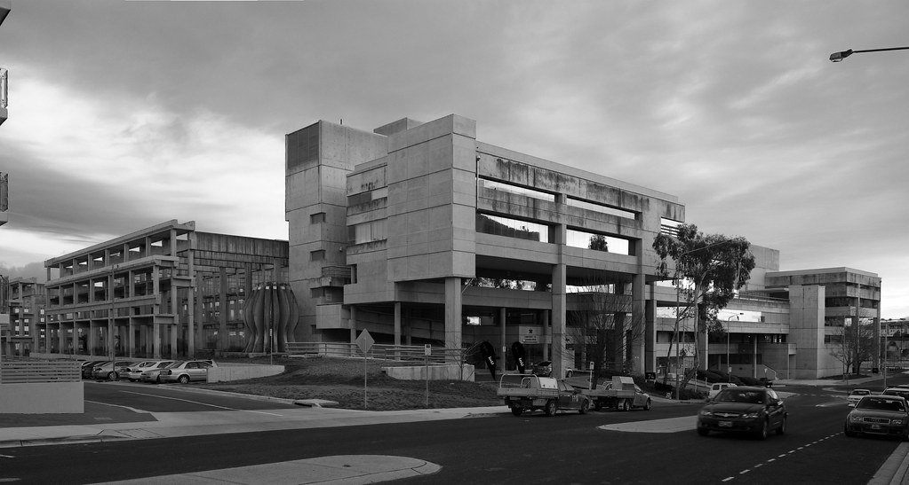
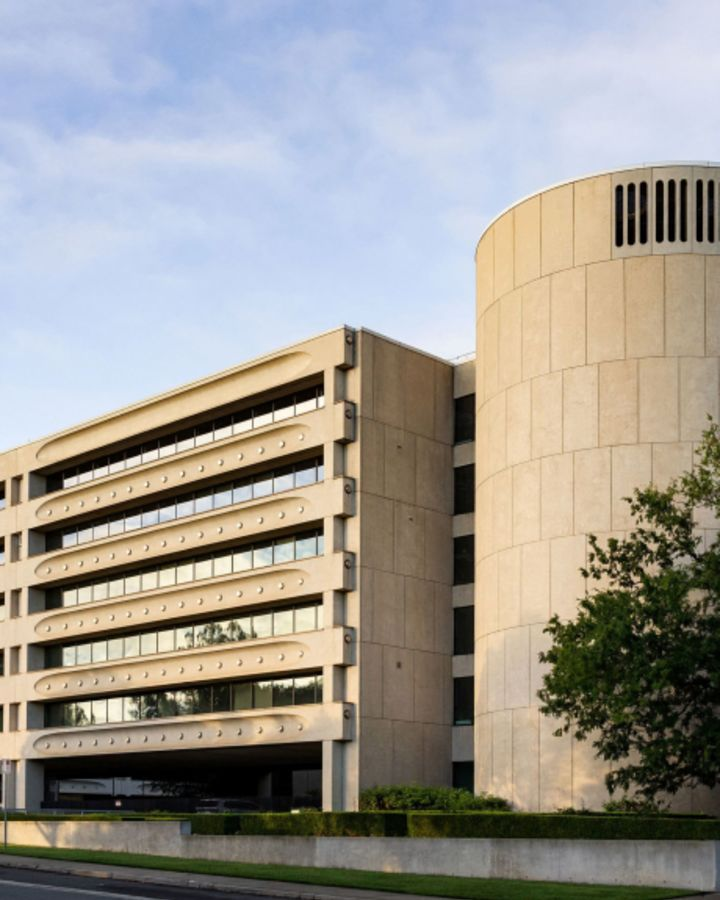
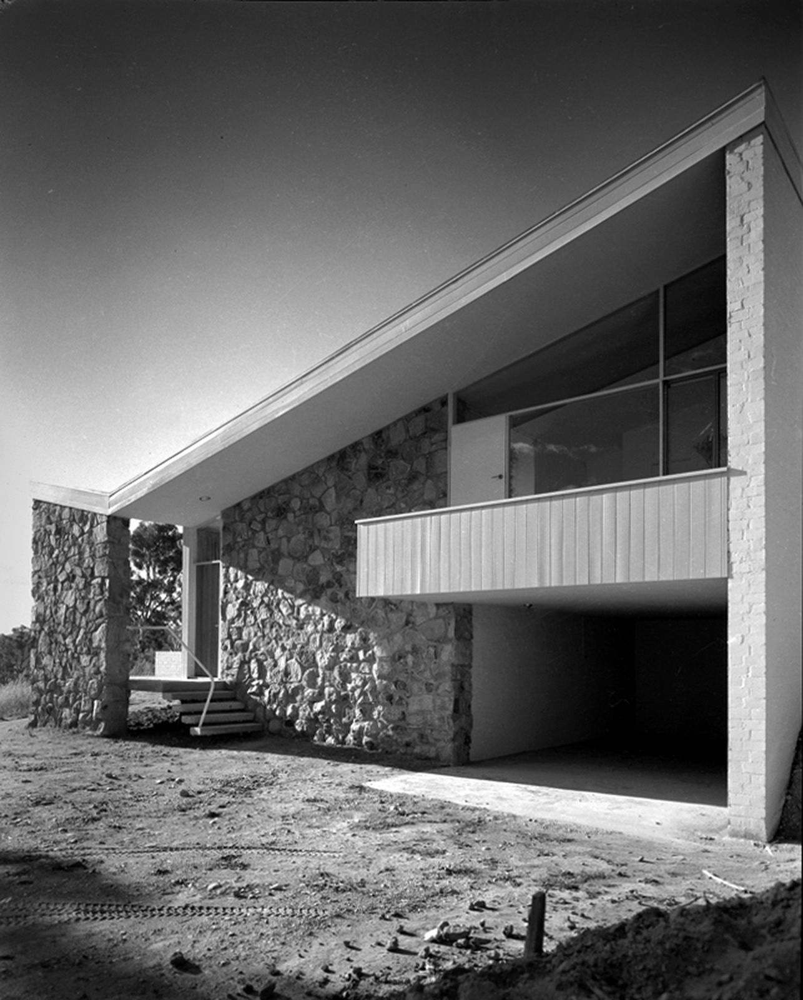

The Shine Dome.
The dome's copper roof is reaching the end of its serviceable life. The Academy is fundraising for a full restoration using techniques compatible with the 1959 original.


The dome's copper roof is reaching the end of its serviceable life. The Academy is fundraising for a full restoration using techniques compatible with the 1959 original.
Browse all places
 At Risk
At Risk
ACTON · 1959
Sir Roy Grounds' copper-clad council chamber, suspended on sixteen concrete arches.

ResidentialDEAKIN · 1967
A working family home that quietly redefined Canberra domestic architecture.

PublicCIVIC · 1971
John Andrews' striated office terraces: half restored, half awaiting heritage protection.

At RiskBARTON · 1976
A late-modernist civic terrace currently the subject of a heritage campaign.
ASPEN ISLAND · 1970
Cameron, Chisholm and Nicol's bell tower: three concrete shafts, fifty-five bells.

ResidentialFORREST · 1962
Roy Simpson's split-level house, a study in compact suburban modernism.
No places match that search yet. Try a broader term, or tell us what we should map next.
Active Campaigns
These campaigns show what is at risk, what needs to happen next, and how visitors can support the work.
Copper roof restoration and long-term conservation planning.
Read the briefDocumenting Canberra's concrete civic architecture.
Get involvedRecording everyday modernist homes and community spaces.
Share a leadLooking for essays, films, and tours? View all stories ↗︎